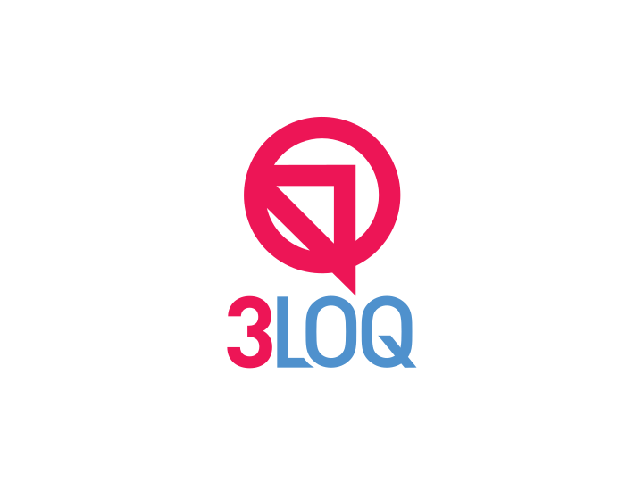

<mat-sidenav-container>

    <div id="fuse-main-content">
      <div class="navigation-container">
          <div class="logo">
              
          </div>
        <div class="nav-horizontal">
        <!-- NAVBAR: Top -->
        <fuse-navbar-horizontal class="top-navbar"
                                [ngClass]="fuseSettings.colorClasses.navbar"
                                *ngIf="fuseSettings.layout.navigation === 'top'">

        </fuse-navbar-horizontal>
        </div>

          <div class="profile">
              <fuse-toolbar class="below" [ngClass]="fuseSettings.colorClasses.toolbar" (logoutOf)="logout()" (goToProfilePage)="goToProfilePage()"></fuse-toolbar>
          </div>

      </div>
      <!-- / NAVBAR: Top -->

        <div id="wrapper">


            <!-- NAVBAR: Left
            <fuse-navbar-vertical [folded]="fuseSettings.layout.navigationFolded"
                                  class="left-navbar"
                                  [ngClass]="fuseSettings.colorClasses.navbar"
                                  *ngIf="fuseSettings.layout.navigation === 'left' || fuseSettings.layout.navigation === 'top'">
            </fuse-navbar-vertical>
             / NAVBAR: Left -->

            <div class="content-wrapper">


                <!--<ng-container *ngIf="fuseSettings.layout.toolbar === 'below'"   >
                    <fuse-toolbar class="below" [ngClass]="fuseSettings.colorClasses.toolbar"></fuse-toolbar>
                  <mat-toolbar class="p-0 mat-elevation-z1">

                  </mat-toolbar>
                </ng-container>-->


                <fuse-content></fuse-content>


            </div>


        </div>


    </div>


</mat-sidenav-container>


